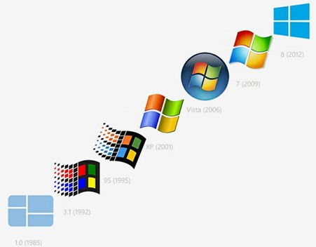
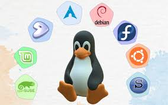
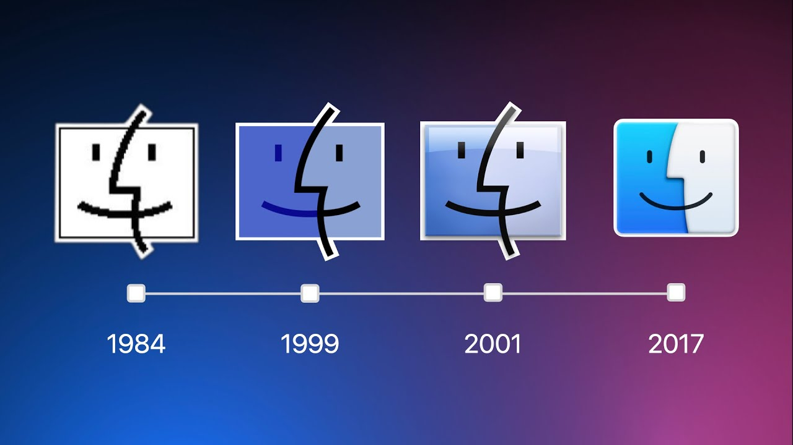

Evolución histórica
Lo que hoy conocemos como informática es el resultado de un desarrollo continuo a lo largo del tiempo, pasando de instrucciones en código puro a los entornos visuales que usamos hoy en día.
Década de 1940: Los Orígenes
A mediados de los años 40 no existía el término "sistema operativo". Los programadores se comunicaban directamente con los ordenadores utilizando lenguaje de máquina puro, programando únicamente con los números 0 y 1.
Década de 1950: El Primer Concepto
En los años 50 surge la idea de un SO. El más famoso apareció en 1956 para el ordenador IBM 704, cuya única tarea era permitir de manera automática que otros programas se ejecutaran sobre él.
Década de 1960: El Nacimiento de UNIX
Los sistemas evolucionaron para permitir la multitarea y el funcionamiento multiusuario. En 1969, Ken Thompson, Dennis Ritchie y Rudd Canaday crearon UNIX en los laboratorios Bell de AT&T, el cual se convirtió en la base de la informática moderna.
Década de 1970 y 1980: Microordenadores
Nace el ordenador personal impulsado por el lenguaje de programación C (una evolución ligada a UNIX). En los 80, Microsoft lanza XENIX (una versión de UNIX para microordenadores) antes de apostar definitivamente por el sistema DOS para aumentar sus ventas masivas.
¿Por qué UNIX es la madre de los sistemas operativos? Aunque no fue el primero, tuvo el mayor impacto en la sociedad. Universidades como Berkeley lo usaron como prototipo, y sistemas modernos como Linux, las bases de Windows y el actual macOS se inspiraron directamente en su arquitectura.
El nacimiento de los sistemas operativos modernos
¿Cuándo y cómo nacieron Windows, macOS y Linux? A continuación te contamos la trayectoria, los secretos y la evolución de los tres sistemas operativos más famosos y utilizados en todo el mundo.
Windows
Fue fundado inicialmente en 1975 por William H. Gates III y Paul Allen, quienes en ese entonces compartían una enorme pasión por los ordenadores y comenzaron programando en una computadora PDP-10.
Aunque su arquitectura básica se inspiró conceptualmente en UNIX, con el tiempo Microsoft desarrolló el sistema MS-DOS con un entorno gráfico que introdujo mejoras excepcionales para el usuario común. A partir de ahí, sus ventas e influencia en el mercado global crecieron notablemente, dando paso a una constante sucesión de versiones comerciales hasta llegar al entorno actual de Windows 10.

Linux
Es un sistema operativo implementado bajo la filosofía de código libre y abierto, permitiendo que cualquier persona en el mundo acceda a sus líneas de código y modifique su estructura interna libremente.
Sus cimientos se remontan a 1983 cuando Richard Stallman inició el proyecto GNU (basado en UNIX), sentando las bases para la Free Software Foundation. Más adelante, en 1991, Linus Torvalds desarrolló de forma personal un núcleo modular. Aunque las primeras pruebas de la versión 0.01 se mantuvieron en secreto, el lanzamiento público de Linux 0.02 y su posterior evolución (pasando por las versiones 0.10 y 0.95) lograron una aceptación masiva gracias a su enorme estabilidad.

macOS
Es uno de los sistemas operativos comerciales más jóvenes en su estructura actual. Aunque Apple utilizaba entornos gráficos comerciales desde 1984, el sistema moderno que conocemos hoy en día data de mediados del año 2001.
A diferencia de sus competidores, la arquitectura de Mac OS X se construyó directamente sobre los pilares puros de UNIX, aprovechando las importantes innovaciones tecnológicas desarrolladas por la empresa NeXT a mediados de la década de los 80. Tras la compra de dicha compañía por parte de Apple en 1997, se lanzó una primera versión de prueba en 1999 (Mac OS X Server 1.0) que culminaría en el despliegue oficial de su versión comercial definitiva en marzo de 2001.

El mercado actual: El desarrollo de estos tres ecosistemas no fue una tarea sencilla; requirió resolver complejos problemas de compatibilidad y altos costos de infraestructura. Hoy en día, Windows, Linux y macOS continúan compitiendo de cerca, impulsando la innovación en ordenadores personales, servidores y dispositivos inteligentes.